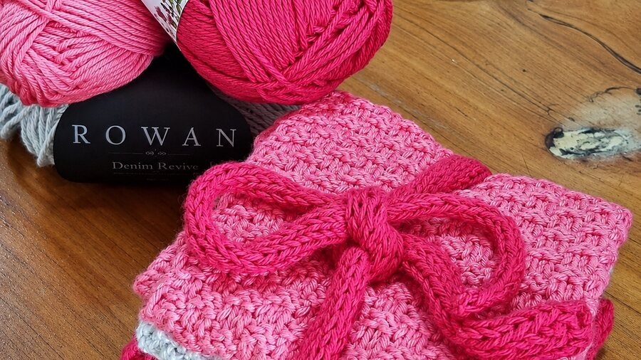
Yarn by the ball and the skein
Fine spun, glowing, multi coloured wools, mostly from small Canterbury and South Island outlets. Sock yarn, jersey quantities, and one off skeins you will not find in a chain store.
Marton, Rangitikei · Wool studio and Ashford dealer
A small studio on Follett Street, stacked with fine spun wool from little South Island mills, fibre and fleece for spinners and felters, patterns, buttons, and Ashford wheels and looms. Pull up the sofa and we will work out your next project together.
What is on the shelves
Everything here has been picked by hand, a lot of it found on road trips through small South Island towns. If you cannot see what you need, ask. It is a small shop with a long list of suppliers.

Fine spun, glowing, multi coloured wools, mostly from small Canterbury and South Island outlets. Sock yarn, jersey quantities, and one off skeins you will not find in a chain store.
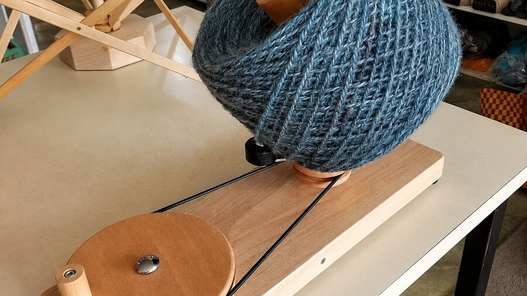
We are the local Ashford Wheels and Looms agent. Spinning wheels, rigid heddle and table looms, carders, niddy noddies, drive bands and the small spare parts that stop a project dead.
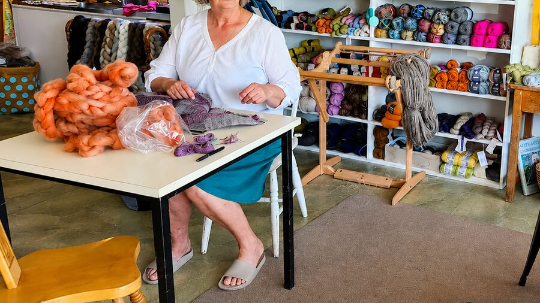
Carded batts, tops and raw fleece for spinners, felters and anyone learning on a borrowed wheel. Come and handle it. Fibre is very hard to judge from a photo on a screen.
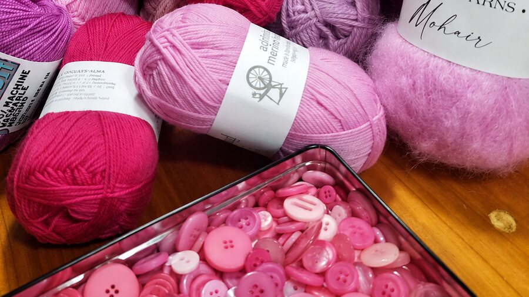
Needles, hooks, stitch markers, row counters, project bags, and the shelves of artistic ceramic, porcelain and plastic buttons that people drive here for on their own.
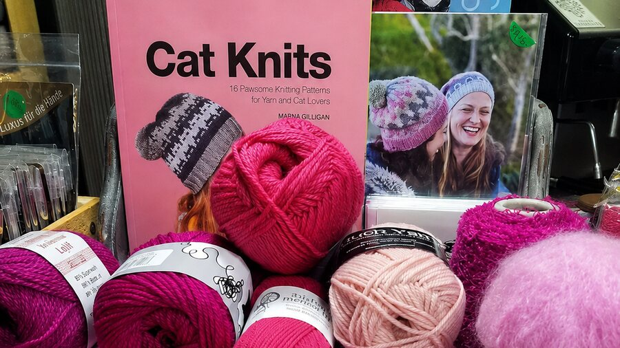
Patterns for jerseys, toys and the clever two needle socks a local designer worked out. Bring the tangle in with you. Most problems get sorted over a cuppa in about ten minutes.
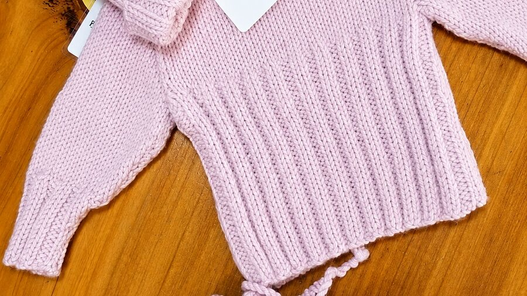
Knitted rabbits with real personality by a local woman, leather bags from South Island makers, and small handmade things worth wrapping. Good for the knitter who has everything.
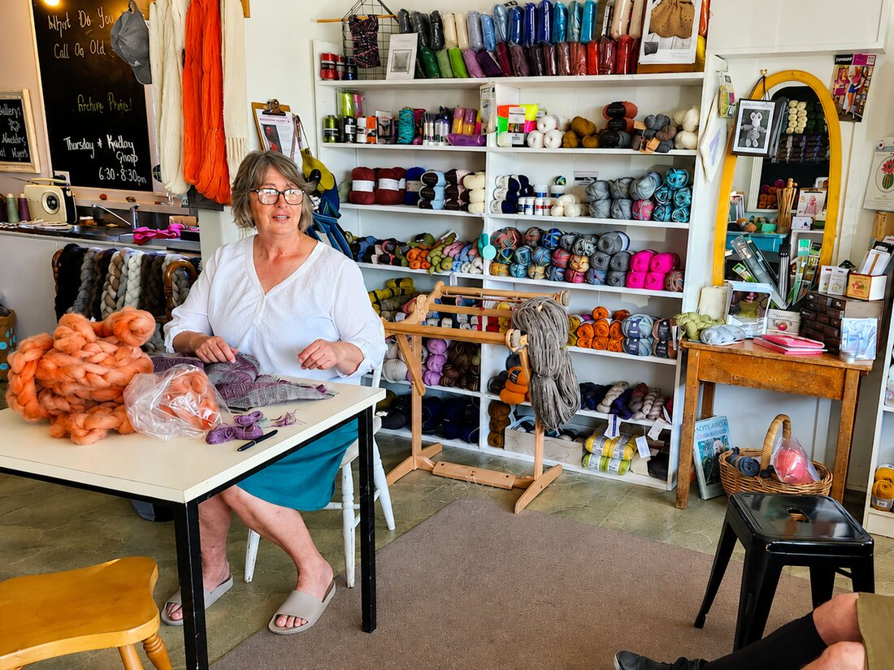
About the studio
The Farmhouse Wool Studio is a tiny room in Marton, run by Linda Hale, sitting behind Peggy and Lils Cafe, which is named after her grandmothers. It is small enough that you can see everything from the doorway, and full enough that you will still find something on the third visit.
It has quietly become a meeting place for people who love making soft woollen things, from cosy jerseys through to knitted toys. There is a sofa. There is usually a wheel going. Nobody minds if you come in to look and stay to talk.
Who you will meet
Roles shown without a name are examples of how the studio runs, not real named staff.
Owner and studio host
Buys every ball on the shelf, runs the wheel, and is the one you get on the phone. Ring her before you drive over and she will tell you straight whether the yarn you want is in.
Saturday mornings
Keeps the shelves tidy and the kettle on so Saturday shoppers get looked after quickly, even when the studio is three deep with knitters.
By arrangement
For anyone new to a wheel or a rigid heddle loom. Getting your first wheel set up and treadling properly is a lot faster with someone sitting beside you.
Reviews
Most customers come from Marton, Bulls, Hunterville, Whanganui and Feilding, and a fair few plan the trip around it.
Drove over from Whanganui for one Ashford bobbin and left with that plus enough yarn for a jersey. Linda knew exactly what I was after and had it on the shelf.
Smallest shop I have ever stood in and the best stocked. I sat on the sofa for an hour while we worked out where my sleeve had gone wrong. Came home with the right needles too.
Lovely fibre for felting and the buttons are worth the trip on their own. Coffee next door afterwards makes it a proper morning out.
I stopped buying yarn online after coming here. Being able to feel it in your hand first makes all the difference, and the advice is free.
Leave a review
A quick line on Google helps other knitters, spinners and felters in the district find the studio. It takes about a minute.
In the studio
Wool, needles, hooks, buttons and a wheel or two, all within arm's reach of the sofa.
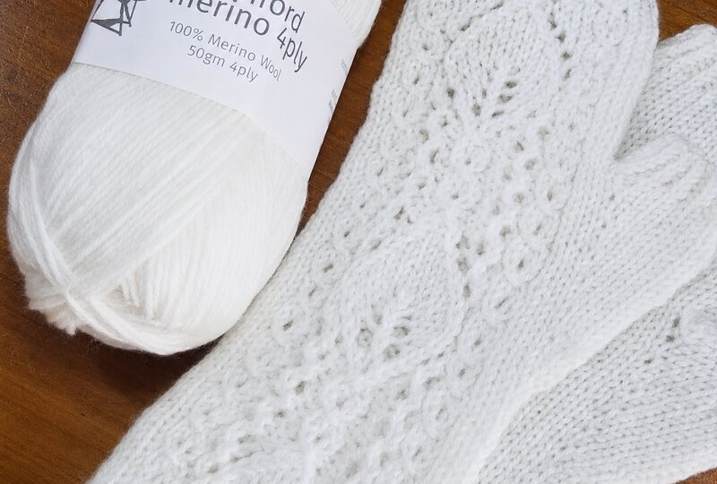
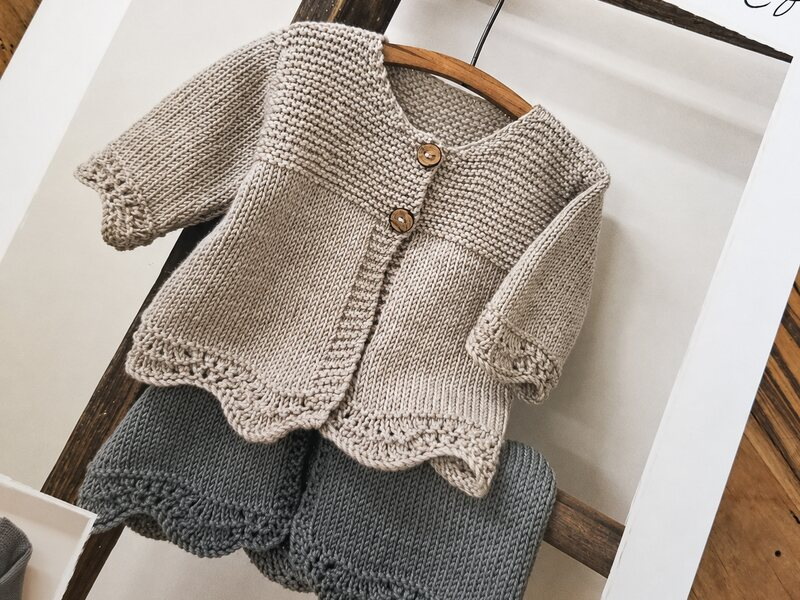
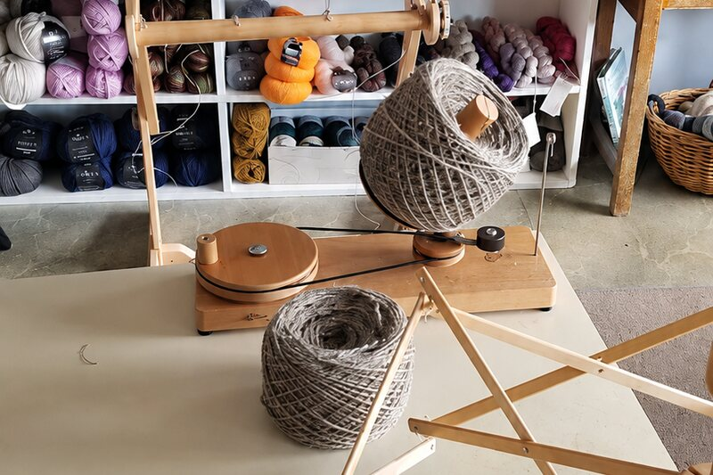
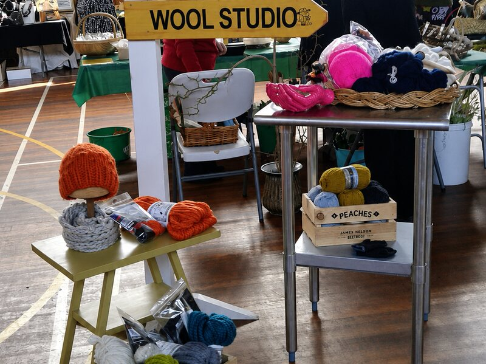
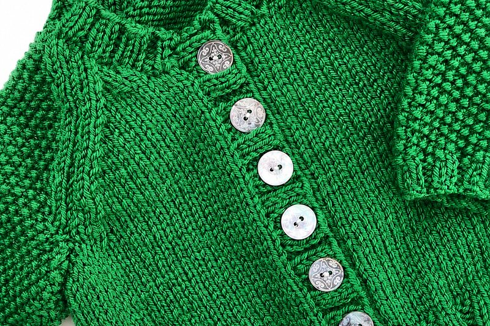
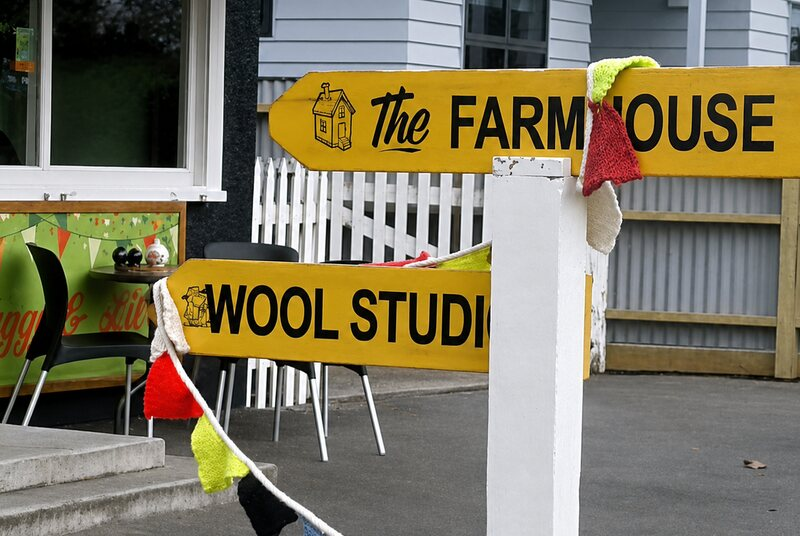
Visit the studio
Ring first if you are driving in from out of town and want something specific put aside. It is a small studio, so stock moves.
Hours can shift around markets, wool shows and school holidays, so a quick ring beforehand never hurts.
Linda answers the phone herself. If you know what you are after, she can check the shelf while you are on the line and set it aside.